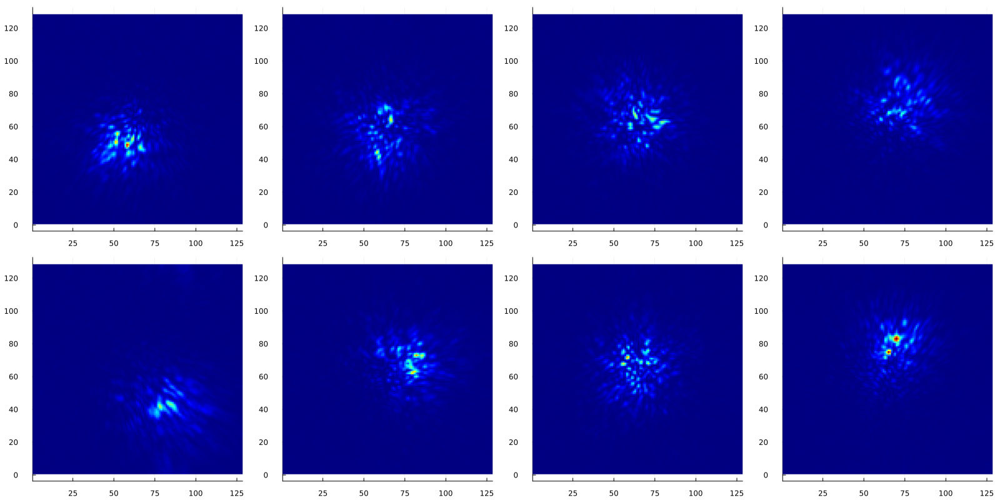

Overview
AtmosphericTurbulenceSimulator.jl simulates atmospheric turbulence effects in telescope imaging. It provides tools for sampling turbulent phase screens, propagating them through a pupil model, and generating image sequences for point sources, binary systems, and extended sky images.
The package is designed for simulation runs that need:
- Kolmogorov phase screens parameterized by the Fried parameter $r_0$.
- Harding interpolation for efficient high-resolution phase generation (see Harding et al. 1999).
- Circular or user-defined aperture functions.
- Monochromatic or sampled-bandpass imaging.
- Photon-counting readout with optional background.
- HDF5 output for large batches, or in-memory arrays for interactive work.
- CPU multi-threading and device-backed arrays such as CUDA arrays.
Installation
The package is not registered yet. Install it from the Julia REPL with:
using Pkg
Pkg.add(url="https://github.com/aryavorskiy/AtmosphericTurbulenceSimulator.jl")Core Workflow
A simulation combines three pieces:
- A true-sky model, such as
PointSource,DoubleSystem, orTrueSkyImage. If none is provided, a point source is assumed. - An atmosphere model, such as
SingleLayer, which samples turbulent phase screens. - An imaging device specification,
ImagingSpec, which defines the aperture, detector grid, photon budget, exposure, and filter.
The main entry point is simulate_images, which takes these pieces and produces a sequence of images.
using AtmosphericTurbulenceSimulator, Plots
aperture = CircularAperture((64, 64), 30)
img_spec = ImagingSpec(aperture, PhotonCount(1e7, 200); filter=FilterSpec(550, bandwidth=40))
atm = SingleLayer(0.1 / 2 * 64; interpolate=:auto)
result = simulate_images(atm, img_spec; n=8, verbose=false)
p = plot(layout=(2, 4), size=(1600, 800))
for i in 1:8
heatmap!(p[i], result.images[:, :, i], cmap=:jet, cbar=false, clim=extrema(result.images), aspect_ratio=:equal)
end
p
For larger simulations, specify the file keyword argument to write results directly to disk. See the Examples section for more info.
Atmosphere Model
The current atmosphere model is a single turbulent layer. Phase covariance follows Kolmogorov statistics:
\[D_\phi(r) = \big\langle (\phi(x) - \phi(x+r))^2 \big\rangle = 6.88 \left( \frac{r}{r_0} \right)^{5/3}.\]
The Fried parameter $r_0$ controls turbulence strength. Larger $r_0$ means weaker phase aberrations. In this package, pass $r_0$ in pixels on the phase-screen grid.
For large grids, SingleLayer can use Harding interpolation (Harding et al. 1999). The phase is sampled on asmaller grid and then upsampled in a way that preserves Kolmogorov statistics. interpolate=:auto selects a coarse grid size based on the default heuristic.
Imaging Model
The imaging pipeline converts each phase screen into a PSF, applies the selected true-sky model, and optionally applies photon shot noise. A non-monochromatic FilterSpec scales both turbulence strength and diffraction with wavelength, while assuming that the aperture itself is achromatic.
The sampled-bandpass model is most appropriate for narrow bands where the telescope pupil does not vary significantly with wavelength.
Performance
Backends
Julia multi-threading can improve large CPU simulations:
julia --threads=autoGPU execution is selected by passing a device adapter, for example deviceadapter=CuArray after loading CUDA.jl:
using CUDA
simulate_images(PointSource(), atm, img_spec; n=100_000, file="simulation.h5", deviceadapter=CuArray)CUDA.jl is the only GPU backend currently tested. Other Julia GPU array backends may work if they provide the required array operations and FFT support.
Batch Size
The batch keyword controls both compute batch size and HDF5 chunk size along the image sequence dimension:
simulate_images(PointSource(), atm, img_spec; n=10_000, batch=256, file="simulation.h5")The default batch size is 128. Increase it when enough memory is available, especially for many CPU threads or GPU execution. Decrease it if memory pressure is high.
Next Steps
- Work through Examples for phase-screen generation, imaging simulations, and HDF5 output.
- See API Reference for constructors and keyword arguments.